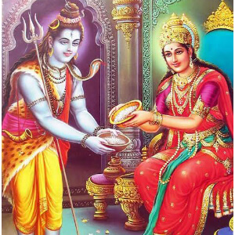

 <!-- ======= Features Section ======= -->
 <section id="features" class="features section-bg">
    <div class="container" data-aos="fade-up">

      <div class="section-header">
        <h2>About Us</h2>
        <p>Consequatur libero assumenda est voluptatem est quidem illum et officia imilique qui vel architecto accusamus fugit aut qui distinctio</p>
      </div>

      <ul class="nav nav-tabs row  g-2 d-flex aligns-items-center justify-content-center">

        <li class="nav-item col-1">
          <a class="nav-link active show" data-bs-toggle="tab" data-bs-target="#tab-1">
            <h4>About Us</h4>
          </a>
        </li><!-- End tab nav item -->

        <li class="nav-item col-1">
          <a class="nav-link" data-bs-toggle="tab" data-bs-target="#tab-2">
            <h4>Team</h4>
          </a><!-- End tab nav item -->

        <li class="nav-item col-1">
          <a class="nav-link" data-bs-toggle="tab" data-bs-target="#tab-3">
            <h4>Deities</h4>
          </a>
        </li><!-- End tab nav item -->

      </ul>

      <div class="tab-content">

        <div class="tab-pane active show" id="tab-1">
          <div class="row">
            <h3>History of the Temple</h3>
            <p>The founders of Om Sri Sai Balaji Temple envisioned creating a place of worship for individuals largely based in
              the Tri-State area. After several years of research, planning, and perseverance, the founders were fortunate enough
              to secure land for the temple in Monroe, New Jersey. All plans and architectural designs were presented to the
              Planning Board of Monroe Township. The township unanimously approved the plan to construct the Authentic Hindu
              Temple and Cultural Center. An auspicious groundbreaking ceremony for the Om Sri Sai Balaji Temple was performed
              on June 26, 2016. Let us join together to create a beautiful place of worship for Lord Venkateswara and many more
              deities, including a 22 feet Hanuman idol.</p>
          
            <b></b>
          
            <h3>Mission</h3>
            <p>The primary mission of the Om Sri Sai Balaji Temple is to cater to the spiritual needs of all families and to
              celebrate all occasions, festivals and rituals. The goal of this temple is to cultivate a divine atmosphere to learn
              from the timeless knowledge present in our sacred literature. This temple also serves to inspire people to search
              for divinity present within themselves through unconditional and selfless love.</p>
          
            <b></b>
          
            <h3>Phases of the Temple</h3>
            <p>The Om Sri Sai Balaji Temple will be built on a 11.2 acre Land in two Phases.</p>
            <b></b>
            <h5>First Phase</h5>
            <p>The first phase includes construction of the 20,000-square-foot, Om Sri Sai Balaji Temple and Cultural Center. The
              first phase also includes construction of 165 of the total 278 parking spaces.</p>
            <b></b>
            <p>The Om Sri Sai Balaji temple will be built in sub-phases which comprises the following four buildings in various
              milestones.</p>
            <ul>
              <li><i class="bi bi-check2-all"></i>Building 1: The Building One is called the Sai Jnana Mandir, which is 20,000
                sqft, 2 floors building, which comprises a Prayer Hall and Classrooms and a commercial Kitchen.</li>
              <li><i class="bi bi-check2-all"></i> Building 2: The Building two, is the Hanuman temple, with a 22 ft Hanuman idol,
                enclosed in an octagonal shaped glass which entitles devotees to perform pradashanas.</li>
              <li><i class="bi bi-check2-all"></i> Building 3: The Building three, is the main temple which comprises of 3 Floors,
                <ul class="tab_section_gap">
                  <li><i class="bi bi-check2-all"></i>First Floor: Garba Gudi</li>
                  <li><i class="bi bi-check2-all"></i>Ground Floor: Cultural Center & Kalyana Mandapam</li>
                  <li><i class="bi bi-check2-all"></i>Basement : Cafeteria</li>
                </ul>
              </li>
              <li><i class="bi bi-check2-all"></i> Building 4: The Building four is the Priest Quarters.</li>
            </ul>
            <b></b>
            <p>All Buildings would be interconnected. The Temple is built with Granite and idols arriving from India.</p>

            <b></b>
            <h5>Second Phase</h5>
            <p>The second phase of the temple, would be the completion of the Parking Lot with the remaining parking spaces.</p>
            <b></b>
          </div>
        </div><!-- End tab content item -->

        <div class="tab-pane" id="tab-2">
          <div class="row">
            <p class="fst-italic">The Om Sri Sai Balaji Temple is being built by the following founders.</p>
            <div class="col-4">
              <div class="p-10">
                <h3>Suryanarayana Maddula</h3>
                <h6>Founder and Chairman</h6>
              </div>
              <p>Mr. Suryanarayana Maddula,a successful Pharmacist and a Businessman migrated to the United States in the 
                early 1970’s. After building a temple in his hometown in India, he realized he wanted to build one in the 
                US as well. He envisioned a temple that could pass down Indian traditions and culture for future generations 
                to come. Suryanarayana Rao is supported by his wife, Mrs. Prabhavathi Maddula, who actively participates in 
                all temple initiatives.</p>
            </div>
            <div class="col-4">
              <div class="p-10">
                <h3>Ramakrishna Sannidhi</h3>
                <h6>Co-Founder and Vice Chairman</h6>
              </div>
              <p>Mr. Ramakrishna Sannidhi has been in the pharmacy business for over 30 years. He is very devoted, service oriented, 
                and eager to serve the community. Ramakrishna and his wife, Lalitha Sannidhi, participate in bhajans and educational 
                programs at the Sathya Sai Center of East Brunswick, NJ.</p>
            </div>
            <div class="col-4">
              <div class="p-10">
                <h3>Ramesh Taduvai</h3>
                <h6>Co-Founder and Vice Chairman</h6>
              </div>
              <p>Mr. Ramesh Taduvai has worked as a pharmacist for more than 15 years. He and his wife, Mrs. Vani Taduvai, are 
                ardent Shirdi Sai Baba devotees and volunteer at the local Shirdi Sai temple.</p>
            </div>
          </div>
        </div><!-- End tab content item -->

        <div class="tab-pane" id="tab-3">
          <div class="row">
            <div class="col-3 image_section"><h5> Annapurna</h5></div>
            <div class="col-3 image_section"><h5> Ayyapa</h5></div>
            <div class="col-3 image_section"><h5> Venkateswara Swami</h5></div>
            <div class="col-3 image_section"><h5> Bala Krishnudu</h5></div>
            <div class="col-3 image_section"><h5> Dakshina Murthy</h5></div>
            <div class="col-3 image_section"><h5> Dattatreya</h5></div>
            <div class="col-3 image_section"><h5> Durga Devi</h5></div>
            <div class="col-3 image_section"><h5> Sankatahara Ganapati</h5></div>
            <div class="col-3 image_section"><h5> Veera Hanuman</h5></div>
            <div class="col-3 image_section"><h5> Kanika Parameswari</h5></div>
            <div class="col-3 image_section"><h5> Lord Shiva</h5></div>
          </div>
        </div><!-- End tab content item -->

      </div>

    </div>
  </section><!-- End Features Section -->